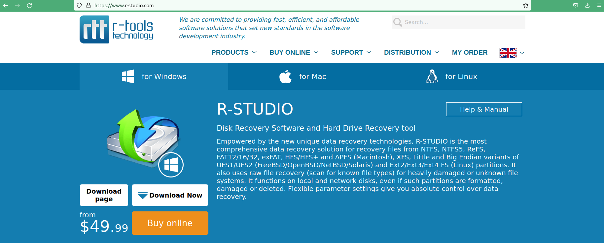
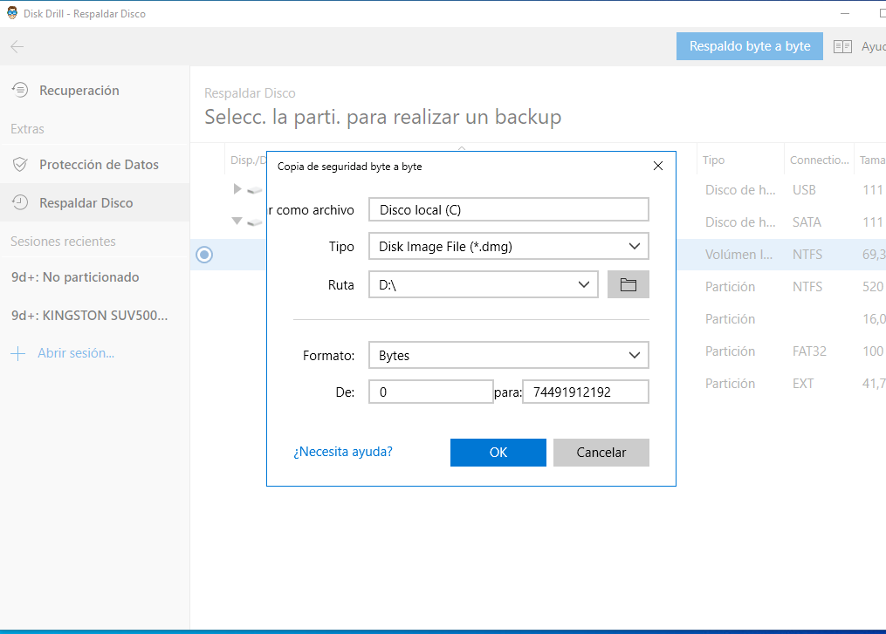

1ª Descargamos el
instalador desde
la web oficial de Disk Recovery
2ª Ejecutamos el instalador
y seguiremos los
pasos pertinentes
3ª Nos pedirá asignarle permisos
para escanear el sistema
cuando lo necesite
4ª Seleccionamos el disco
del que queramos hacer la copia de seguridad

6ª Por último terminamos
seleccionando la ruta donde se guardará
la copia del disco